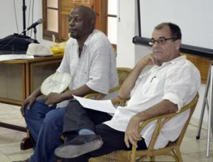
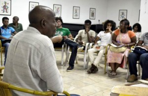

Intervista con guerra Alberto Naranjo, Presidente de la Sección de Narrativa de la Asociación de Escritores de la UNEAC
Di: Camilo García Lopez-trigo


Sobre tan emprendedora tarea, que a todas luces pudiera tener un impacto muy positivo en la producción de nuestros medios audiovisuales, su creador nos comenta que “se trata de un Taller, porque los estudiantes van a estar activos ante el nuevo conocimiento, ante las tareas que ellos mismos se van a proponer y ante el objetivo que perseguimos, que es crear nuevos guionistas y guiones basados en obras literarias del país, de Latinoamérica y del mundo… en ese orden, dándole prioridad al país, a los escritores desconocidos, a los anteriores olvidados, a los no olvidados y a los actuales, sin distinción, pero que siempre medie la calidad.”
Al hablar del nombre conque se presenta el taller, explica que “existen conceptos y categorías como versión libre, texto original, adaptación; pero con el fin de no superencasillar la actividad es mejor «traslación» o «interpretación» del texto literario en la pantalla – en la pequeña o en la grande. O sea, que haya un poco de traición pero no tanta, como se acostumbra en este tipo de arte, donde el guionista a veces olvida totalmente al creador o a veces lo traslada tan exacto que no cumple el objetivo y lloramos cuando hay que reír mientras estamos viendo la puesta. Queremos que haya una relación dialéctica, como diría Carlos Marx, en constante movimiento.”


“Existe una mayoría de la población que necesita de la literatura, pero desde pequeños la está recibiendo a través de la pantalla”, amplía al respecto. “Está recibiendo cualquier literatura, de cualquier país – sobre todo de Estados Unidos – y, a no ser por Juan Padrón que logró trasladar los mambises al cine con Elpidio Valdés, nos olvidamos en sentido general de nuestra historia contada en dramatizados de manera sistémica.”
“Por eso es bueno que en estos tiempos de globalización recuperemos las tradiciones de nuestro país, y que no triunfe la banalidad y la frivolidad por encima de nuestra pertenencia. Los pueblos que pierden las raíces terminan pareciendo globos deambulantes. Si alguien desea recorrer el mundo, es preferible que lo haga llevando la tradición a cuestas, un sólido bagaje que evidencie y distingas al ser. Y si en nuestro caso, como profesores de audiovisuales que somos, podemos aportar desde el entretenimiento, la emoción y el placer de producir buenas puestas – y de paso provocar catarsis y reflexión en los espectadores, como sujetos activos en esta traslación – entonces se va ganando mucho.”
Estas ideas hacen recordar los recientes debates y diversos planteamientos que surgieron en las asambleas de la membresía de la UNEAC, con motivo del VIII Congreso de la organización. Alberto coincide en que “este es el momento justo”, pues desde su condición de “humilde Presidente de la Sección de Narrativa, con un mínimo de poder – digamos que un centímetro cuadrado dentro de todo el escalón jerárquico de la UNEAC –tengo la ventaja de estar en contacto con el resto de los narradores.”
“Yo soy un hombre de la promoción”, resalta, “ un emprendedor en cuanto a trasladar y negociar conocimientos, soy de los pocos narradores que tienen cuatro cuentos literarios trasladados a versiones de TV”. En eso ha ayudado mucho su formación como profesor, Licenciado en Historia y Ciencias Sociales: “eso me encanta, he estado frente a aulas desde que tengo 20 años o menos, he tenido la fortuna de pasar por talleres literarios y no me avergüenzo de decir que salí de ellos”.
Con orgullo reconoce que tiene la suerte de que su narrativa incida en un cada vez mayor número de lectores y “como desde mi soledad en el reparto Flores logro hacer estas cosas, es un deber también propiciar que se sume el resto de las personas que tengan interés en crear guiones, para transmitirle mis experiencias y aprender de ellos”.
En el taller Alberto no está solo, comparte cátedra con el también guionista y escritor Mario Martínez Delgado, quien trasladó a la televisión su cuento Disparos en el aula, que confiesa haber realizado por encargo de los estudiantes de un preuniversitario y que “ha tenido la fortuna de navegar muy bien” pues aparece en una antología entre un cuento de Borges y otro de Juan Rulfo y fue el primer cuento de mambises que se transmitió en ese espacio.
Señaló que durante un reciente encuentro que tuvo con Mario, y tras hablar mucho sobre estos problemas, surgió la idea de elaborar este taller para “aportar un grano de arena y sellar esa zona oscura, para que otra vez vuelvan a la pantalla los mambises, como mismo se hace en todas partes con su historia: provocar un diálogo provechoso y fructífero con nuestros antepasados”.
Durante la primera clase del taller se creó una dinámica muy amena entre los profesores y las más de treinta personas que acudieron a la convocatoria, que se mantiene abierta para los próximos encuentros. Alberto asegura que ese primer acercamiento fue una adaptación, porque salió diferente a lo que habían pensado a partir de las limitaciones impuestas a las posibilidades técnicas para el curso.
“En esa primera clase había que improvisar, que conocer a los alumnos, que mostrarle los objetivos generales… pero no se sabía a ciencia cierta lo que iba a pasar. Siempre tengo algunas cartas bajo la manga y una de ellas fue provocarlos con el esquema actancial de Jules Greimas, para darles un presupuesto en el cual apoyarse a la hora de valorar algún texto literario o un audiovisual.”
A partir de ese comienzo se debatió ampliamente la segunda secuencia de El Padrino, que consideró “inolvidable, corta y contundente”. “Ese fue nuestro modelo, para seguir en lo adelante deconstruyendo cómo se hace un guión audiovisual y cómo está integrado un texto literario; o sea, qué hay que hacer, cuáles son los pasos y qué hay que ver”, reveló.
Sobre quienes asisten al taller indicó que se ha reunido un grupo muy diverso y envidiable, pues “hay de todo”: personas muy jóvenes, médicos, karatecas, ingenieros agrónomos y navales, con diferentes aspiraciones y variantes.
Pero no puede aguantar el entusiasmo cuando se le pregunta de las expectativas: “Yo espero que al menos salgan tres buenos guionistas, el resto la está pasando bien y aprende, se supera y cambia. Yo les decía a ellos que – hablando de narrativa, de guiones, ecc. – principio y fin son la misma cosa, porque se debe partir y cerrar en el mismo punto, pero siempre debe haber un crecimiento.”
“Yo espero que quienes se inicien con Página y Pantalla: La Traslación al final sean los mismos, pero diferentes”, concluyó.